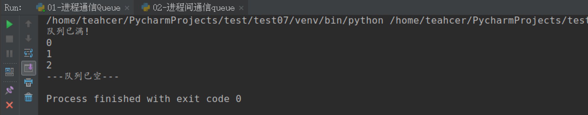
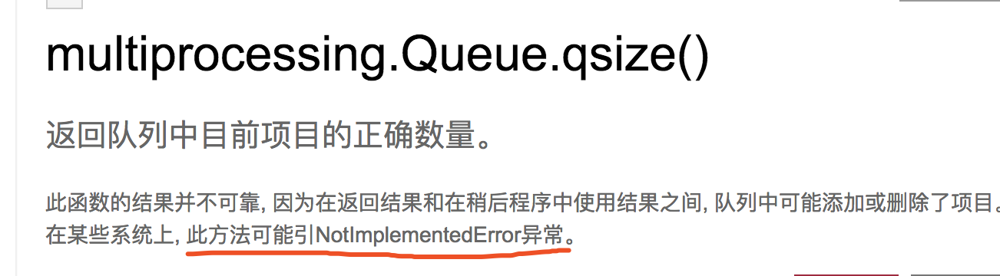

08-Queue实现进程间通信
目标¶
- 知道使用 Queue 队列能够实现进程间数据共享
1. 进程间通信思路¶

2. Queue实现进程间通信¶
我们以Queue为例，在父进程中创建两个子进程，一个往Queue里写数据，一个从Queue里读数据：
阻塞式同步执行¶
import multiprocessing
import time
def write_queue(queue):
# 循环写入数据
for i in range(10):
if queue.full():
print("队列已满!")
break
# 向队列中放入消息
queue.put(i)
time.sleep(0.5)
def read_queue(queue):
# 循环读取队列消息
while True:
# 队列为空，停止读取
if queue.empty():
print("---队列已空---")
break
# 读取消息并输出
result = queue.get()
print(result)
if __name__ == '__main__':
# 创建消息队列
queue = multiprocessing.Queue(3)
# 创建子进程
p1 = multiprocessing.Process(target=write_queue, args=(queue,))
p1.start()
# 等待p1写数据进程执行结束后，再往下执行
p1.join()
p1 = multiprocessing.Process(target=read_queue, args=(queue,))
p1.start()
运行结果：

非阻塞式异步执行¶
import multiprocessing
import time
def work1(queue):
""" 进程work1不断地放入数据 """
for i in range(10):
print("+++进程1向queue添加数据:", i)
queue.put(i)
queue.put(i)
queue.put(i)
time.sleep(0.5)
def work2(queue):
""" 进程work2不断地获取数据
3秒之内没有获取到数据（阻塞超过3秒），主动关闭掉自己
"""
try:
while True:
value = queue.get(timeout = 3)
print("---进程2从queue获取数据:", value)
except:
print("3秒之内没有获取到数据，主动关闭掉自己")
if __name__ == '__main__':
queue = multiprocessing.Queue(5)
p1 = multiprocessing.Process(target=work1, args=(queue,))
p2 = multiprocessing.Process(target=work2, args=(queue,))
p1.start()
p2.start()
print("主进程....")
3. Queue使用过程中常见的错误¶
2.1 qsize() 报错¶
